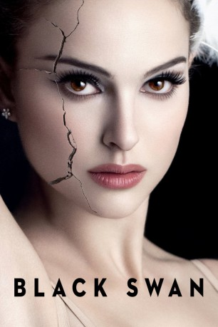
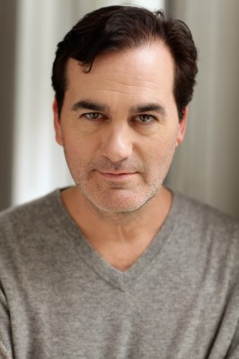

#1702 Black Swan
Auszeichnungen: 1 Oscars gewonnen für 4 Oscars nominiert 1 GoldenGlobes gewonnen 1 BAFTA-Awards gewonnen
 
 IMDB-Wertung: 8.0 / 10
IMDB-Wertung: 8.0 / 10  Metascore: 79
Metascore: 79 
Nina ist eine ehrgeizige und leidenschaftliche Ballett – Tänzerin, die ihr Leben ausnahmslos ihrer Arbeit an der New Yorker Ballet Company widmet. Dabei wird sie energisch von ihrer Mutter, selbst eine ehemalige Tänzerin, gefördert. Als die Rolle der Primaballerina für die Produktion des Klassikers Schwanensee neu besetzt werden soll, wird Nina von Regisseur Thomas Leroy favorisiert. Sie bekommt jedoch schnell Konkurrenz durch die jüngere Lily, die zwar technisch schwächer ist, aber eine Leichtigkeit besitzt die sich nicht mit Übung erreichen lässt. Zwischen den beiden entsteht eine außergewöhnliche Beziehung, die zur Zerreißprobe für Nina wird. Immer intensiver lernt sie die düstere Seite ihres Selbst kennen, das ihr bedrohlicherweise immer ähnlicher wird.
Jahr: 2010
Dauer: 108 Minuten
FSK: 16
Land: USA Studio: Fox Searchlight PicturesTonspuren: DTS - ,
Untertitel: Deutsch,
Auflösung: 1080p (1920x800) Größe: 9984 MB
Genre: Drama, Thriller
Regisseur: Darren Aronofsky
Drehbuch: Mark Heyman, Andres Heinz, John J. McLaughlin, Andres Heinz
Soundtrack: Clint Mansell
Darsteller:
 Natalie Portman als Nina Sayers / The Swan Queen
Natalie Portman als Nina Sayers / The Swan Queen Mila Kunis als Lily / The Black Swan
Mila Kunis als Lily / The Black Swan Vincent Cassel als Thomas Leroy / The Gentleman
Vincent Cassel als Thomas Leroy / The Gentleman Barbara Hershey als Erica Sayers / The Queen
Barbara Hershey als Erica Sayers / The Queen Winona Ryder als Beth Macintyre / The Dying Swan
Winona Ryder als Beth Macintyre / The Dying Swan- Benjamin Millepied als David / The Prince
- Ksenia Solo als Veronica / Little Swan
- Kristina Anapau als Galina / Little Swan
- Janet Montgomery als Madeline / Little Swan
 Sebastian Stan als Andrew / Suitor
Sebastian Stan als Andrew / Suitor- Toby Hemingway als Tom / Suitor
 Mark Margolis als Mr. Fithian / Patron
Mark Margolis als Mr. Fithian / Patron- Tina Sloan als Mrs. Fithian / Patron
 Marcia Jean Kurtz als Costumer Georgina
Marcia Jean Kurtz als Costumer Georgina-  Shaun O'Hagan als Stage Manager Sebastian
- Chris Gartin als Sexy Waiter Scott
- Deborah Offner als Administrator Susie
 Stanley B. Herman als Uncle Hank
Stanley B. Herman als Uncle Hank- Kurt Froman als Understudy for Siegfried
 Marty Krzywonos als Conductor
Marty Krzywonos als Conductor- Tim Fain als Violin Player
- Patrick Heusinger als Rich Gent
- Megan Dickinson als Corps De Ballet
- Sarah Hay als Corps De Ballet
- Adrianna de Svastich als Corps De Ballet
- Gina Artese als Corps De Ballet
 Andrew Daly als Ballet Dancer , uncredited
Andrew Daly als Ballet Dancer , uncredited- Rhona Fox als Socialite , uncredited
- Daralina Komar als Ballet Dancer , uncredited
- Tim Lacatena als Ballet Dancer , uncredited
- Carmella Stolyar als Assistant Stage Manager , uncredited
- Sergio Torrado als Sergio / Rothbart
- Abraham Aronofsky als Mr. Stein / Patron
- Charlotte Aronofsky als Mrs. Stein / Patron
- Michelle Rodriguez Nouel als Physical Therapist
- Leslie Lyles als Nurse
- John Epperson als Jaded Piano Player
- Arkadiy Figlin als Piano Player
- Sarah Lane als Lady in the Lane
- Liam Flaherty als Man in Stall
- Marina Stavitskaya als Ballet Mistress
- Olga Kostritzky als Ballet Mistress
- Christine Redpath als Ballet Mistress
- Alexandra Damiani als Ballet Mistress
- Rebecca Azenberg als Corps De Ballet
- Laura Bowman als Corps De Ballet
- Holly L. Fusco als Corps De Ballet
- Abigail Mentzer als Corps De Ballet
- Barette Vance als Corps De Ballet
- Lillian di Piazza als Corps De Ballet
Datei: X:\2010(A-F)\Black Swan (2010, FSK16, 1920x800).mkv seit 06.08.2015
Festplatte: HD 2009(G-Z)-2010(A-F)
 Es gibt insgesamt 95 Filme in der Gruppe '2010(A-F)'
Es gibt insgesamt 95 Filme in der Gruppe '2010(A-F)'